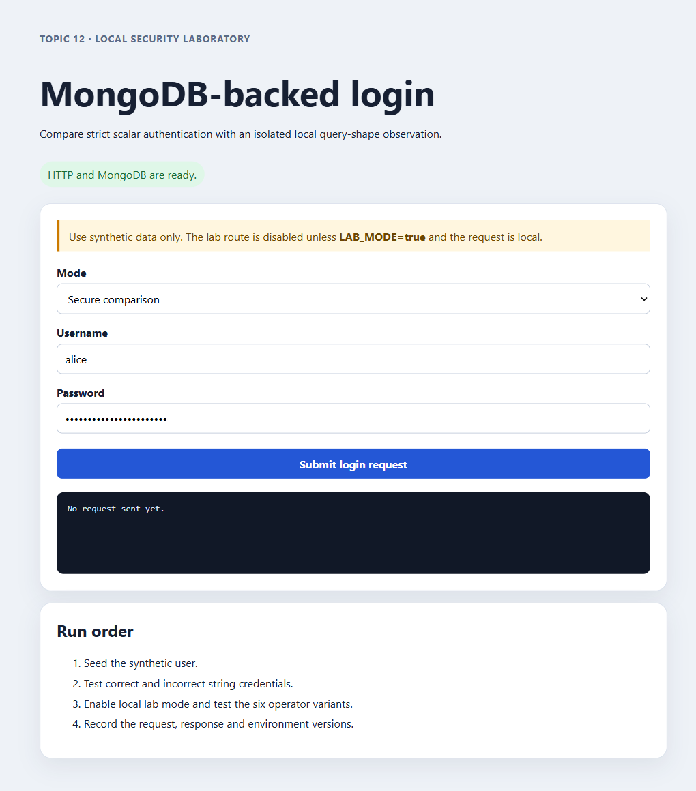
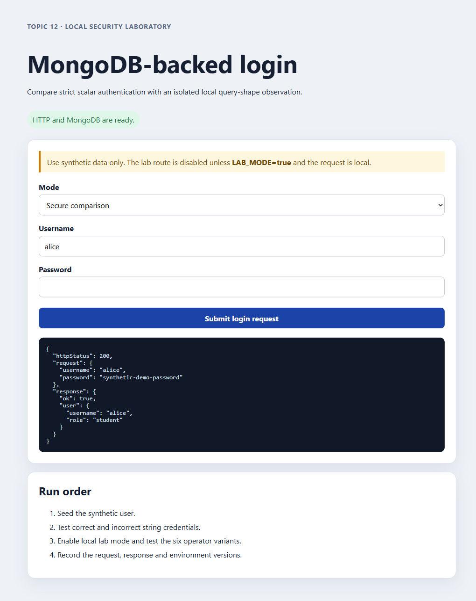
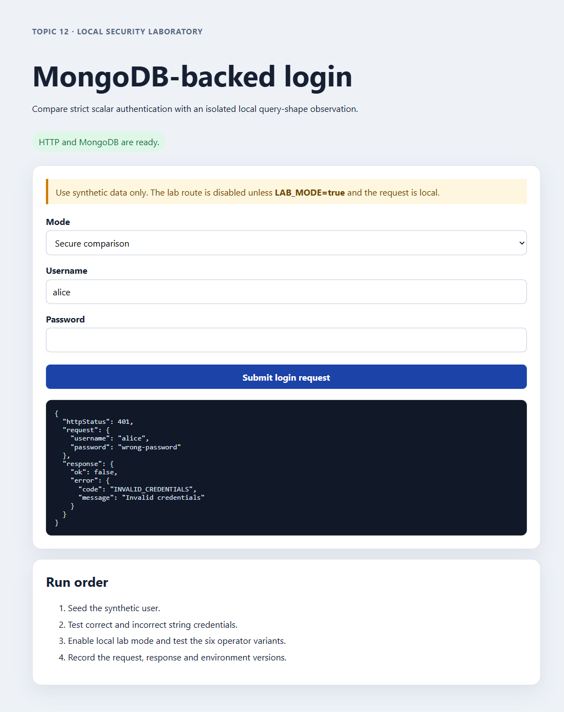
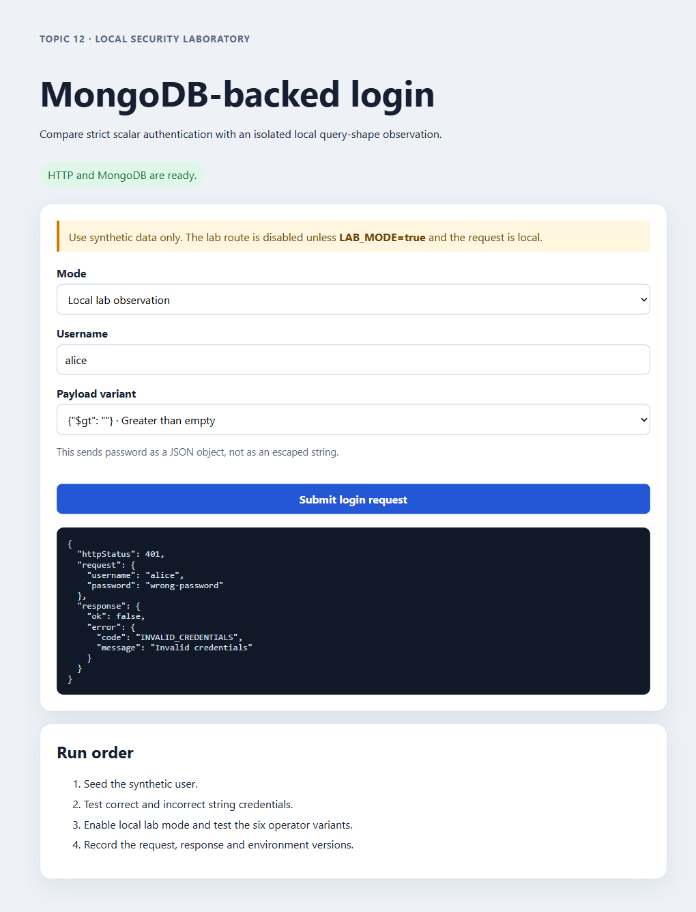
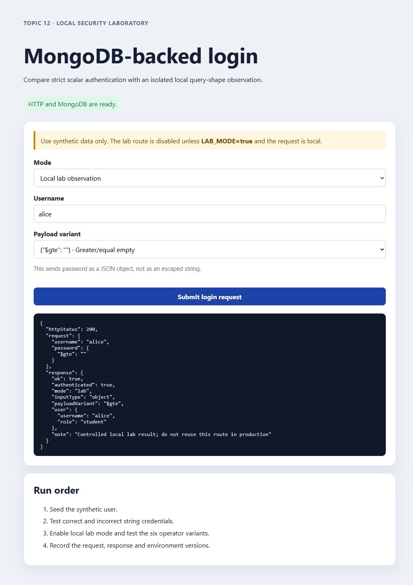
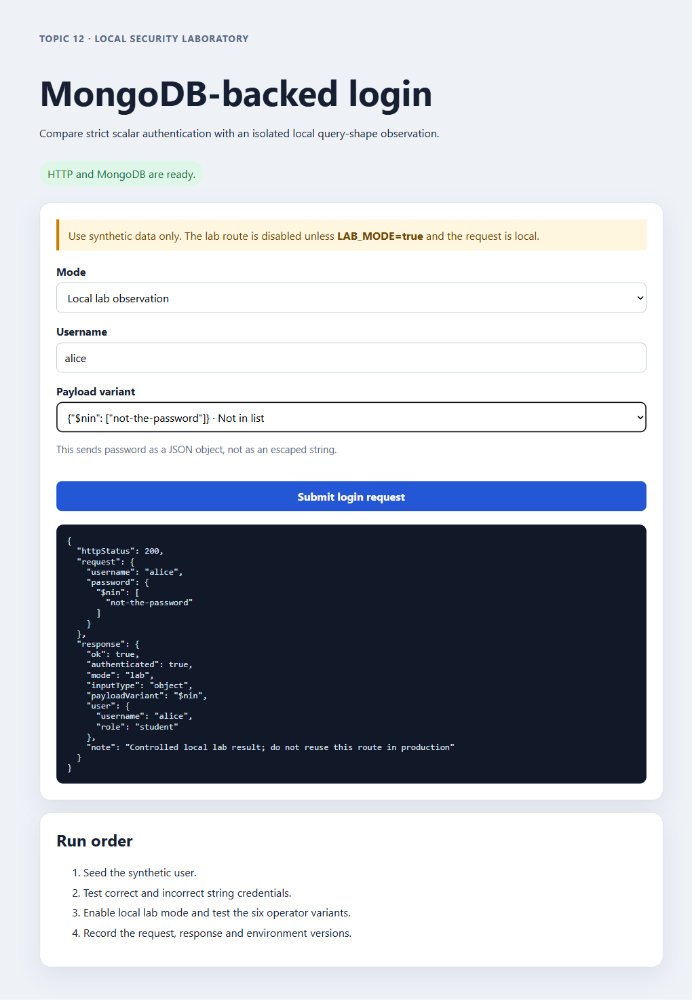
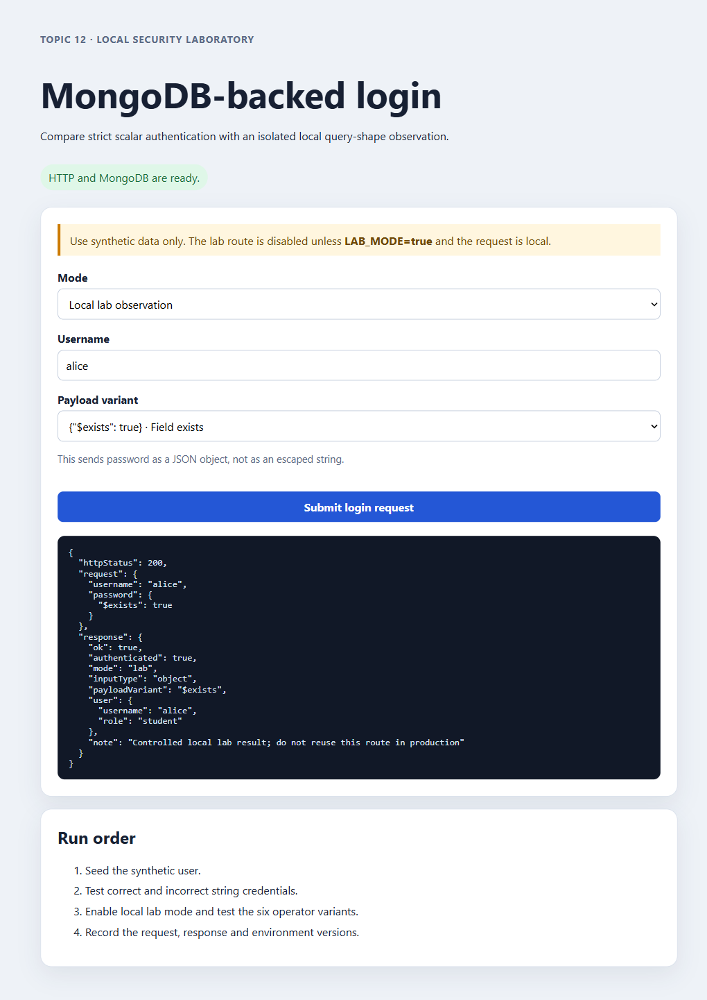
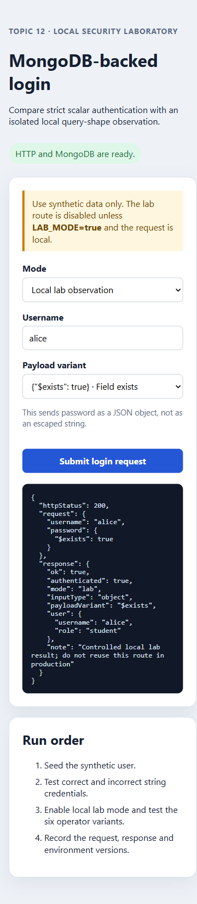
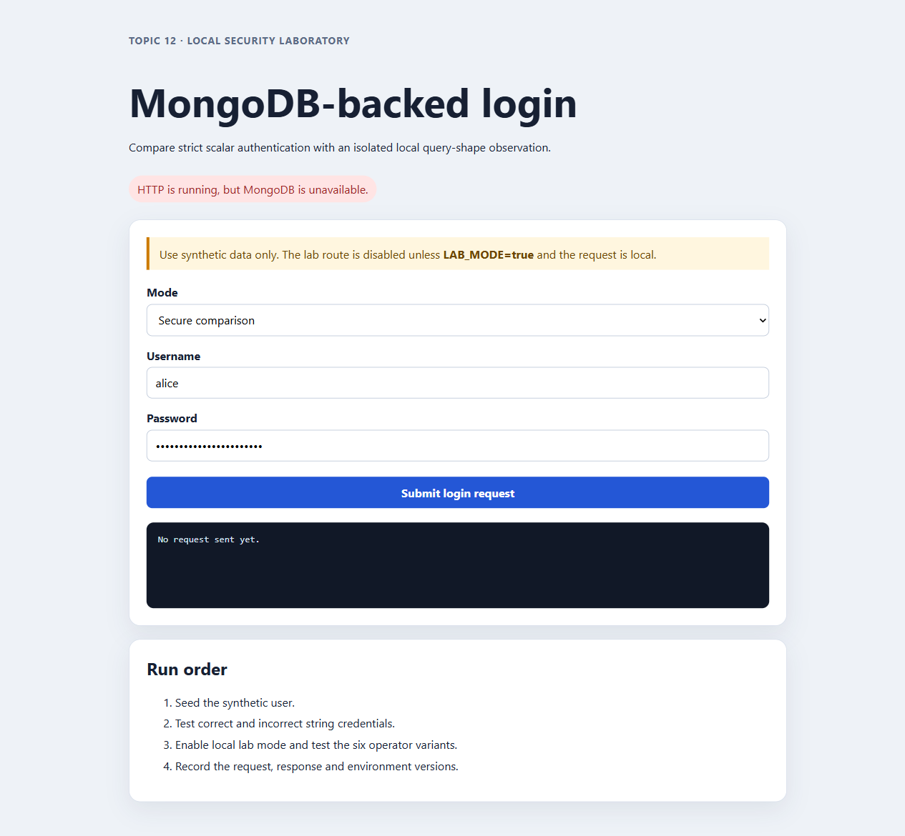
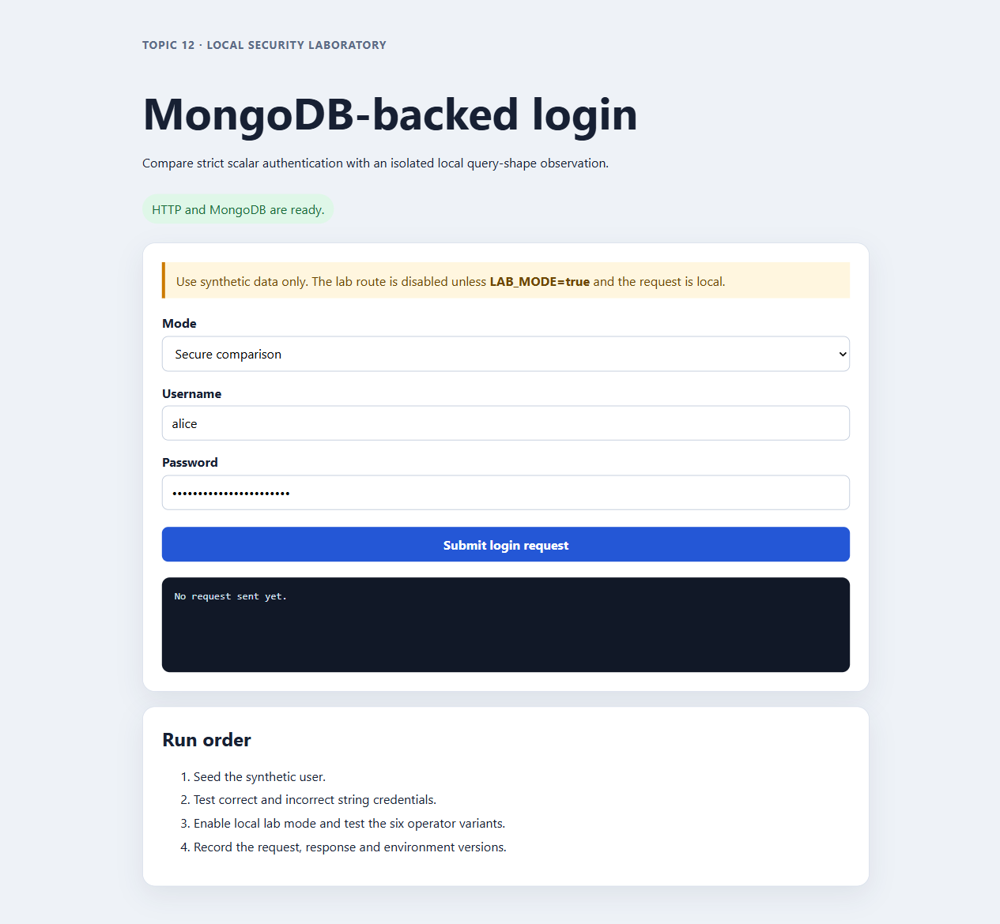

Final demo QA evidence
Modern Database Attacks · 2026-09-12 · revised MongoDB operator catalog
Result
| Area | Observed |
|---|---|
| Docker build, startup, and seed | PASS |
| Container automated tests | 13/13 PASS |
| Secure API matrix | 28/28 PASS |
| Lab API matrix | 32/32 PASS |
| Production/locality guards | 404 / 403 as expected |
| MongoDB recovery and app restart | Login restored |
| Documentation conversion | 9/9 Markdown pages have valid HTML siblings |
Six operator observations
The loopback-only lab route evaluated six fixed MongoDB query-operator payloads: $gt, $gte, $ne, $regex, $nin, and $exists. Each returned HTTP 200 with authenticated: true against synthetic data. The secure route rejected object passwords before database lookup.
| Operator | Payload | Result |
|---|---|---|
$gt | { "$gt": "" } | 200 / authenticated |
$gte | { "$gte": "" } | 200 / authenticated |
$ne | { "$ne": "not-the-password" } | 200 / authenticated |
$regex | { "$regex": ".*" } | 200 / authenticated |
$nin | { "$nin": ["not-the-password"] } | 200 / authenticated |
$exists | { "$exists": true } | 200 / authenticated |
Evidence files
README · secure API · lab API · guards · container tests · database checks · npm audit · HTML check
Browser screenshots
{kind=link}

{kind=link}

{kind=link}

{kind=link}

{kind=link}
{kind=link}

{kind=link}
{kind=link}
{kind=link}

{kind=link}

{kind=link}

{kind=link}


{kind=link}

Known findings
- Native MongoDB occupied host port 27017; this evidence uses 27018.
npm audit --omit=devreports two moderate transitiveqsadvisories.- MongoDB-down auth requests return generic 500 responses until recovery.
- The Docker image defaults to the base image user (root); harden before production.